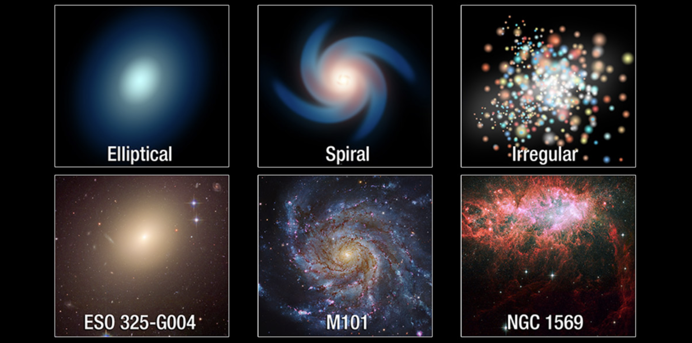

Welcome to The Final Frontier!
Space, the final frontier! Explore the wonders of the universe with us.
Stars
Here is an image of the different kind of stars!

Fun Facts
Here are some fun facts about some of the Planets.
- Jupiter
- It has 80 moons.
- A day on Jupiter is 10 hours.
- Jupiter's atmosphere contains water vapor.
- Mercury
- Mercury is the smallest planet in the solar system.
- Mercury doesn't have any moons.
- A day on Mercury is 59 Earth days.
- Uranus
- It was the first planet to be discovered through a telescope.
- Uranus has 13 rings.
- A day on Uranus is only 17 hours.
- Mars
- The atmosphere on Mars is about 100 times thinner than the Earth's atmosphere.
- Mars can have huge dust storms which last for months and can cover the entire planet.
- Mars is called the Red Planet because of all the iron in the soil.